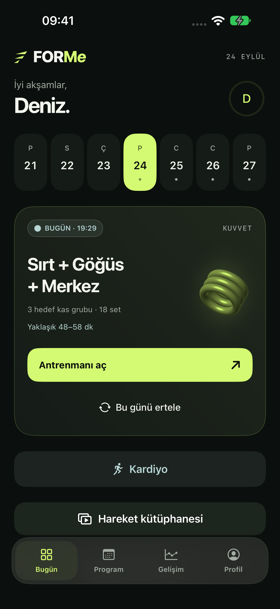
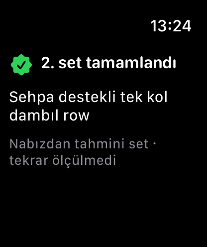
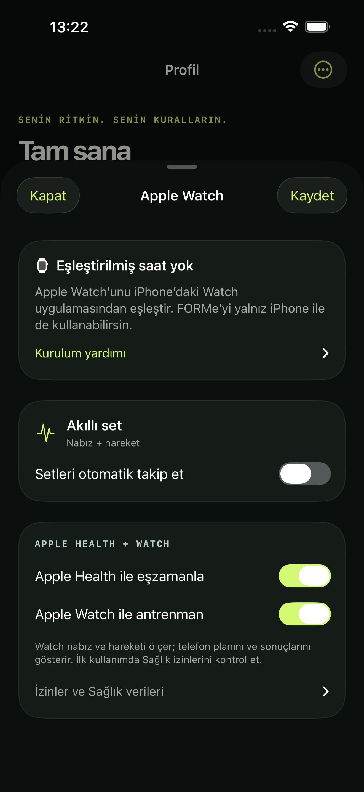

01 / SANA GÖRE
Seviyene uygun bir başlangıç.
Yeni başlıyor veya yıllardır çalışıyor olabilirsin. FORMe Pro; hareket, set, tekrar ve dinlenme seçimini deneyimine göre düzenler. Hedefin, zamanın ve ekipmanın da planına dahil edilir.
iPhone + Apple Watch
İlk antrenmanından yeni hedeflerine. FORMe Pro ile seviyene uygun program, videolu hareket rehberleri ve gelişim takibi.
Ücretsiz başlangıç · İsteğe bağlı FORMe Pro


FORMe ProFORMe / DENEYİM
Planlama, antrenman ve gelişim takibi. Aynı deneyimin parçaları.
01 / SANA GÖRE
Yeni başlıyor veya yıllardır çalışıyor olabilirsin. FORMe Pro; hareket, set, tekrar ve dinlenme seçimini deneyimine göre düzenler. Hedefin, zamanın ve ekipmanın da planına dahil edilir.
02 / GELİŞİM KOÇU
Tamamladığın çalışmalar ve kalan plan birlikte değerlendirilir. Pro ile uygun önerinin dayanağını gör, önizle ve uygula.
03 / APPLE WATCH
Setlerini bileğinden kaydet. Pro ile otomatik set takibini kullan; gerektiğinde kayıtlarını kolayca düzelt.
143 HAREKET
Hareketleri önceden bilmen gerekmez: videolu rehberleri ve teknik açıklamaları inceleyerek hazırlan. 143 kuvvet, kardiyo ve esneme hareketinin yapılışı, ekipmanı ve zorluk bilgisi elinin altında.
Free’de 26 hareketin videosu ve açıklamaları; Pro’da tüm kütüphane.
Free ve Pro’yu karşılaştır
FORMe / FILM
Gerçek uygulama ekranları. Kişiye uyarlanan program, koç ve otomatik set takibi Pro özellikleridir.
Görseller örnek antrenman verileri içerir.
FORMe / FREE & PRO
Önce kendin için dene. Daha fazlasına hazır olduğunda Pro’yu keşfet.
Ücretsiz başla
Hemen başlayabileceğin bir antrenman deneyimi.
Sana uyarlansın
Planın, koçun ve tüm hareket kütüphanen.
Aylık veya yıllık abonelik. Güncel fiyat ve deneme uygunluğu satın alma ekranında gösterilir. İptal etmezsen deneme sonunda seçtiğin plan ücretli olarak yenilenir. Aboneliğini Apple hesabından yönetebilirsin.